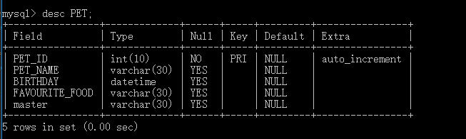
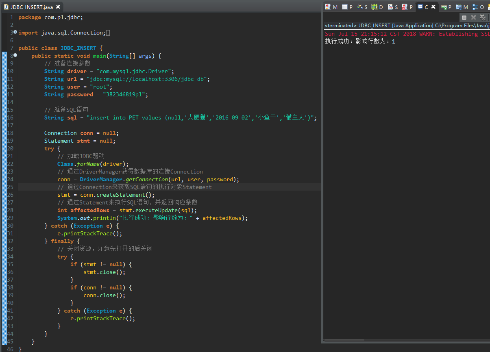
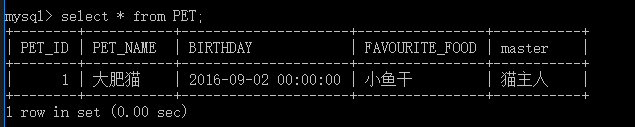
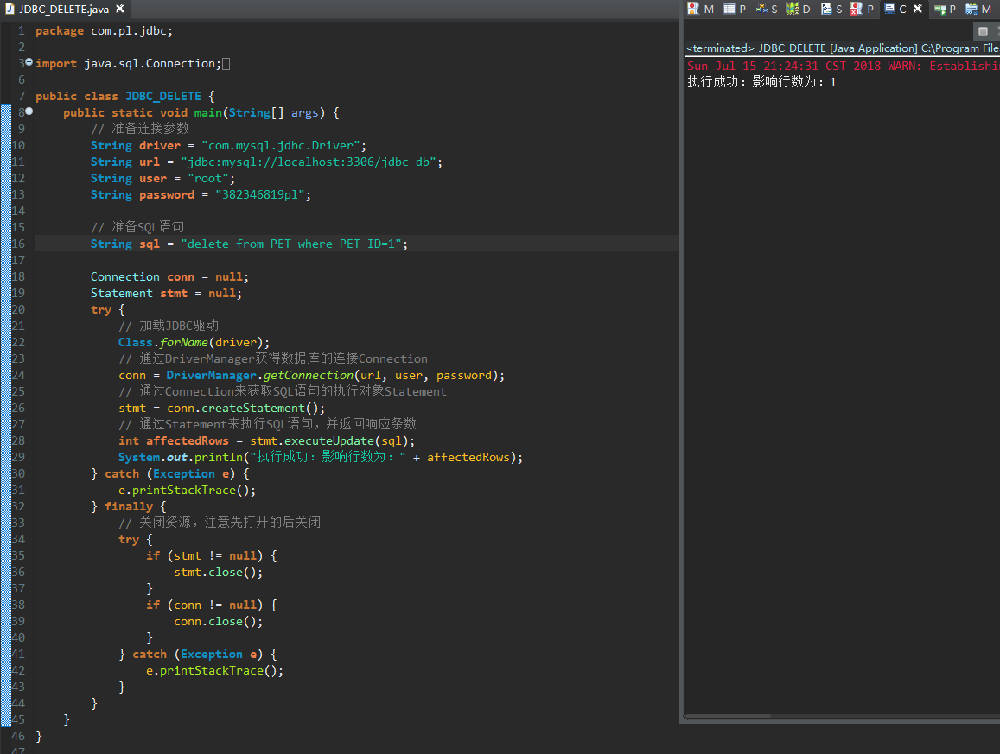
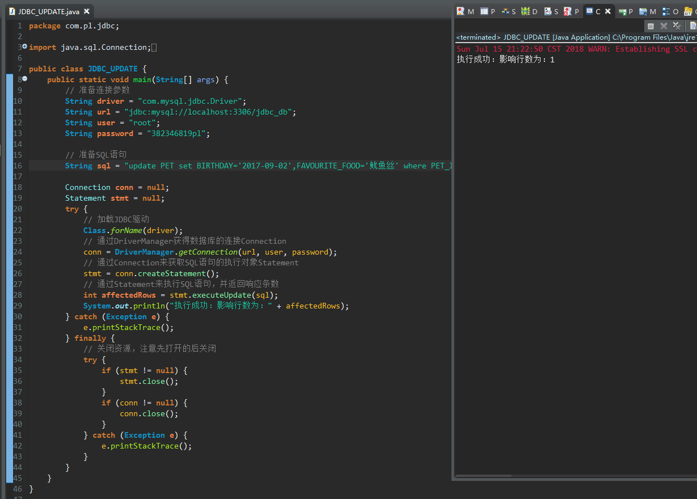
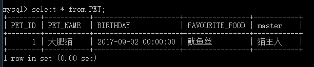
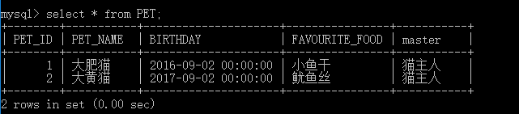
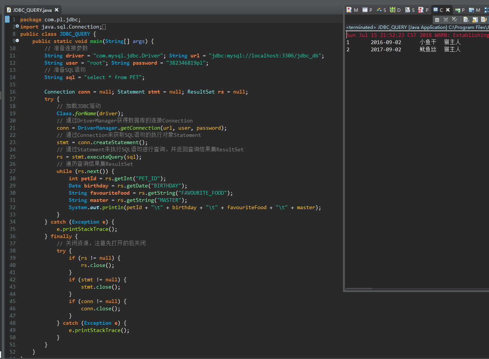
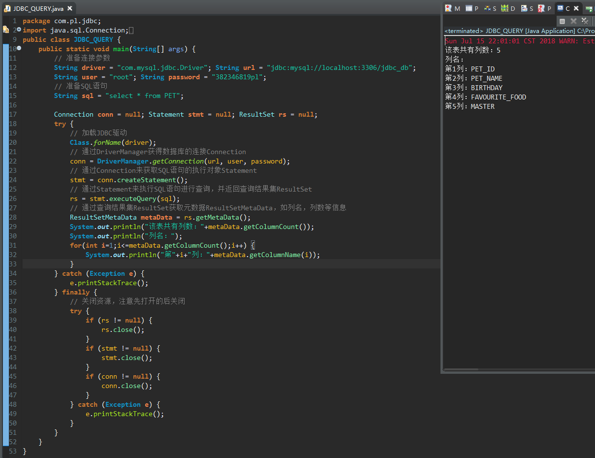
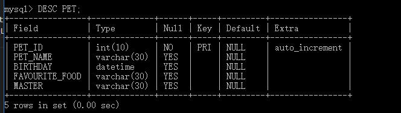

JDBC中常用的类和接口有以下：
- DriverManager类：用于获取Connection
- Connection接口：代表着对数据库的一次物理连接
- Statement接口：代表着SQL语句的执行对象
- PreparedStatement接口：代表着SQL语句的执行对象（预编译）
- ResultSet接口：代表着查询的结果集
- ResultSetMetaData接口：代表着元数据对象，可以通过元数据对象获取表名、字段名等信息
用Statement进行增删改查
数据库中表结构如下：

增加记录


删除记录

修改记录


查询记录


获取元数据

用PreparedStatement代替Statement进行增删改查
由于用Statement的时候有SQL注入的风险，所以一般情况下用的比较多的是使用PreparedStatement来进行增删改查的操作，这样可以防止SQL注入的问题，而且可以提升运行效率
数据库中表结构如下：

增加记录
删除记录
修改记录
查询记录